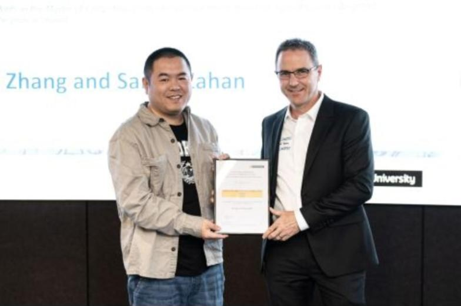
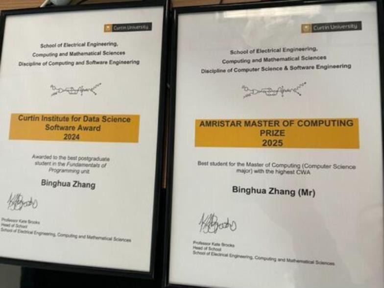
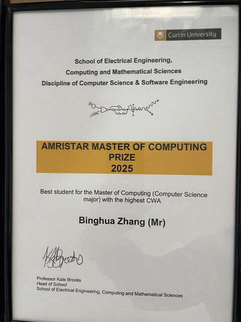

01
Back-end systems & APIs
Complete server sides for mobile apps and web consoles: data models, APIs, sign-in and permissions, background jobs, and documentation other developers can build against.
- Node.js
- TypeScript
- Java
- Spring
- REST APIs
Software engineer · building since 2012
I design, build and run the server side of mobile and web products, from the first data model through to a live service. This page is what I do, where I’ve worked and what I’ve been recognised for.
Building software
10+ yrs
↑ since 2012 and still going
Master of Computing, 2025
#1
highest average in the course
Dean’s commendations
4 of 4
↑ every semester 2024 to 2025
Product areas
4
e‑commerce, education, AI, social
An experienced engineer who takes products from a blank page to production
I’ve been writing software for a living since 2012. I spent most of a decade in Hangzhou building and looking after back-end systems at Servyou Software Group and Hangzhou Zhexin IT, along with a good share of data analysis and reporting work.
Since 2024 I’ve been based in Australia, working as a back-end developer on consumer mobile apps across e-commerce, education, AI and social. I’m often the only back-end developer on the team, so I’m used to owning the whole server side, from the first design through to a live service.
Over the same period I studied for a Master of Computing (Computer Science) at Curtin University, earning a Dean’s Letter of Commendation in four consecutive semesters and the 2025 prize for the best student in the course.
I pick things up quickly, work hard, and take the time to understand a problem properly before I solve it.

The server side of a product, end to end. These are the areas I work in most.
01
Complete server sides for mobile apps and web consoles: data models, APIs, sign-in and permissions, background jobs, and documentation other developers can build against.
02
AI put to work inside real products: assistants that keep context over long conversations, image generation, content written from a user’s own documents, and matching by meaning.
03
Catalogues, pricing and promotions, carts and checkout, orders and refunds, coupons and loyalty points, with online payment by card and the popular digital wallets.
04
Real-time chat, push notifications, feeds, follows and groups, along with the reporting, blocking and moderation tools that keep a community safe.
05
Database design, analysis, reporting and dashboards, and the operational side of a business such as stock control, warehouse picking and delivery planning.
06
Taking services to production and keeping them running: deployment, file storage, testing and releases, and fixing urgent problems quickly when they come up.
Two companies in Hangzhou, close to nine years between them
2015 – 2022
Hangzhou
2012 – 2015
Hangzhou
Back end first, comfortable across the stack
Top of the course at Curtin University


2025
Best student in the Master of Computing (Computer Science major), with the highest course weighted average.
2024
Best postgraduate student in the Fundamentals of Programming unit.
2024 – 2025
For a semester weighted average of 80 or higher.
↑ four semesters in a row
2024 – 2026 · Perth, Australia
Master of Computing, Computer Science major
2010 – 2012 · Hangzhou, China
Bachelor’s degree, Computer Science
I’m open to roles in any location, whether on-site, hybrid or remote. The quickest way to reach me is a message on LinkedIn.
Message me on LinkedIn